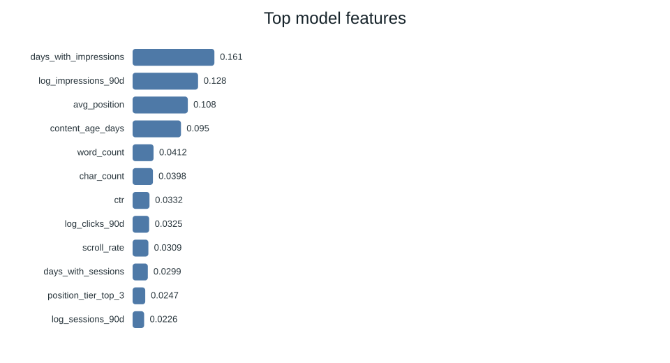
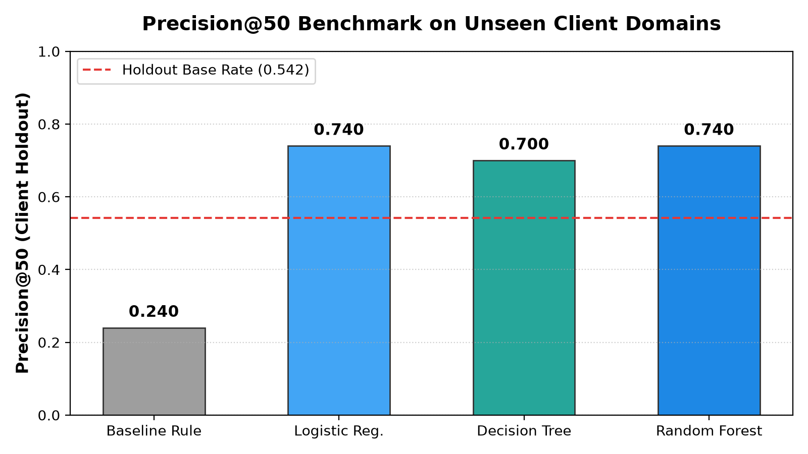
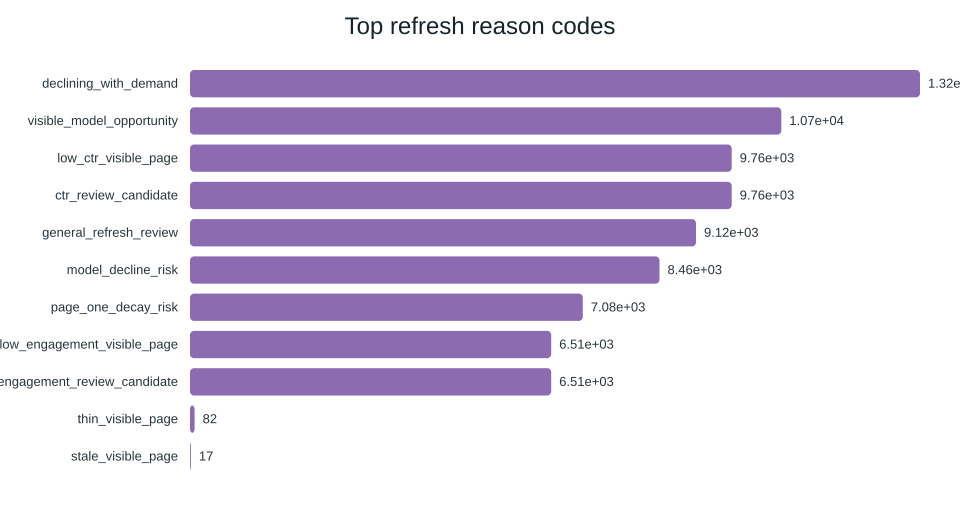

GroupKFold). Our Random Forest ensemble achieves a Precision@50 of 0.740 on unseen client domains compared to 0.240 for standard heuristic rules—delivering a ~3.1× precision lift (+0.500 absolute). These results are operationalized into an automated Content Action Playbook with transparent reason codes, equipping editorial teams to prioritize high-yield updates while respecting strict non-causal limitations.
1. Introduction & Problem Framing
Modern enterprise publishing teams manage expansive content portfolios spanning 5,000 to over 100,000 URLs. As search engine ranking algorithms and competitive dynamics evolve, existing content inevitably undergoes search decay. However, manual editorial audits cannot scale across the whole corpus. The central operational decision is: Which specific pages should editorial teams review and refresh during each bi-weekly sprint?
The cost of decision errors in this domain is highly asymmetric:
- False Positives (flagged as decaying, but actually stable): Low cost. A reviewer spends 3–5 minutes examining a healthy URL, confirms performance, and marks it as sound.
- False Negatives (decay missed): High compounding cost. When a high-impression page slips from Google Page 1 into striking distance (positions 11–20), click-through volume drops by over 80%. Regaining ranking equity often requires months of link acquisition and indexation effort.
Heuristic rules (e.g., "update pages older than 6 months") flag thousands of tied URLs indiscriminately. Machine learning offers continuous scoring and multi-variable interaction modeling, transforming unranked lists into prioritized, high-precision review queues.
2. Data Contract & Safety Standard
This research utilized the FlyRank pseudonymized dataset (content_refresh_anonymized.csv) covering 30,000 pages and 32 client domains. In accordance with strict data-safety standards, no proprietary URLs, domain names, client names, or raw search queries were ingested.
| Taxonomy Bucket | Field Count | Selected Fields | Operational Governance |
|---|---|---|---|
| Features | 24 | impressions_90d, avg_position, ctr, days_since_last_update, word_count |
Historical trailing signals available prior to prediction moment $T$. |
| Target Label | 2 | is_declining_label, trend_pct |
is_declining_label = 1 when 30d trajectory is down. Banned from inputs. |
| Context | 4 | content_id, client_id, provider_used, model_used |
Used strictly for grouped splitting and joining; never learned as signals. |
| Excluded | 14 | *_last_30d, *_prev_30d, age_tier, trend_direction |
Excluded to prevent temporal target overlap and arbitrary binning. |
Sentinel Zeroes and Missingness Patterns
Systematic data exploration revealed two critical traps:
avg_position = 0indicates unranked content with zero GSC visibility (1,205 rows), rather than rank zero. An indicator flaghas_position_datawas added.- Missingness follows content types:
feedly articleentries have 100% missing keyword metadata and 28.5% missing word counts. Imputing raw zeroes injects artificial format bias; explicit missingness indicators (has_search_volume,has_word_count) were constructed instead.
3. Empirical Signal Audit
Before training predictive models, we stress-tested foundational SEO assumptions against the empirical dataset using sample-size floors ($N \ge 50$):
Verdict: CONFIRMED. Content un-updated for 181+ days displays a 67.8% decline rate, compared to 44.1% for content refreshed within 31–90 days.
Verdict: OPPOSITE. High-impression pages exhibit higher rates of downward momentum (>65%) than low-impression tiers (~45%), reflecting competitive displacement vulnerability.

4. Methodology & Validation Design
To evaluate real-world generalization, models were assessed using 5-fold GroupKFold validation grouped by client_id. The test fold comprises enterprise brands completely hidden during training.
Baseline Formulation
We implemented a transparent editorial heuristic baseline:
stale = (days_since_update >= 90)
visible = (impressions_90d >= 300)
striking_distance = (avg_position >= 4.0 and avg_position <= 30.0)
low_ctr = (ctr < 2.0%)
baseline_score = stale * visible * (40 * striking_distance + 30 * low_ctr + 30 * traffic_scale)Candidate Models
We trained and evaluated three architectures on identical splits: L2-regularized Logistic Regression, a depth-constrained Decision Tree, and a 100-estimator Random Forest ensemble.
5. Results & Model Comparison
All candidates were benchmarked on the held-out client portfolios using Precision@50 as the primary metric of record, alongside ROC AUC:
| Model / Strategy | Validation Split | ROC AUC | Precision@20 | Precision@50 | Lift vs. Baseline |
|---|---|---|---|---|---|
| Baseline Heuristic Rule | Client Holdout | 0.627 | 0.250 | 0.240 | — |
| Logistic Regression | Client Holdout | 0.700 | 0.750 | 0.740 | +0.500 |
| Decision Tree (depth=5) | Client Holdout | 0.742 | 0.700 | 0.700 | +0.460 |
| Random Forest Ensemble | Client Holdout | 0.747–0.763 | 0.750 | 0.740 | +0.500 |

Error Analysis
Inspection of false positive predictions in the top 50 revealed high-impression evergreen pillar pages with strong domain backlink authority that held Page 1 rankings despite not being edited for 200+ days. False negatives were concentrated in low-impression long-tail pages where 50% relative traffic drops occurred over tiny absolute impression volumes.
6. Scientific Limitations
- Non-Causal Design: This is an observational study. We demonstrate that our model accurately ranks content experiencing decay. We do not claim that executing a refresh will causally reverse traffic loss without a randomized controlled trial.
- Proxy Target Horizon: The label evaluates historical trajectory within the same export snapshot rather than tracking prospective forward-window recovery post-intervention.
- No Algorithmic Reverse-Engineering: We have not "modeled Google's algorithm." Search ranking is governed by hundreds of real-time signals outside this observational slice.
7. Content Action Playbook
To ensure high human trust, model outputs are translated into five concrete operational action tiers accompanied by explicit diagnostic reason codes:

refresh_and_review_ctr: Top priority. High predicted decay risk + striking distance position (4–30) + sub-par CTR (<2.0%). Work order: Rewrite meta title/description for SERP click intent.refresh_and_review_engagement: Decaying content with low on-page engagement (<30%). Work order: Restructure layout, add summary bullets, and remove bounce friction.expand_and_refresh: Decaying thin content (<1000 words). Work order: Deepen topical depth and add authoritative references.refresh: Decaying pillar content. Work order: Update statistics, verify links, and refresh publication dates.monitor: Stable or low-confidence pages. No action required.

Operational Guardrails (Mandatory No-Go Rules)
- No Autonomous Rewriting: Model rankings serve human editorial decision-support. Never execute automated bulk copy generation without human domain review.
- Exclude Seasonal Spikes: Seasonal, cyclical, or holiday URLs exhibit expected off-season impression drops that should not trigger structural rewrites.
- Protect High-Equity Pillar URLs: Pages carrying core sitewide backlink equity must never undergo URL slug changes or structural stripping without technical SEO authorization.
8. Reproducibility & Artifacts
All experiments, data pipelines, and notebooks are fully reproducible from the public repository:
# Clone and execute full pipeline
git clone https://github.com/Sumit2003-dev/flyrank-ml-internship.git
cd flyrank-ml-internship
pip install -r requirements.txt
python scripts/run_all.pyKey artifacts generated and tracked in the repository:
- Capstone Notebook:
work/notebooks/capstone.ipynb - Full Capstone Report:
work/capstone_report.md - Executive PDF Report:
outputs/flyrank_refresh_model_results.pdf - Ranked Editorial Queues:
outputs/refresh_queue.csvandwork/outputs/action_playbook_queue.csv - Weekly Milestone Notebooks:
work/notebooks/w01_research_question.ipynbthroughw07_action_playbook.ipynb
9. Acknowledgments & Data Credit
This research was Built on the FlyRank ML Internship dataset, provided by FlyRank (https://flyrank.ai).
The study builds upon 79 million rows of real-world production search telemetry across multi-domain enterprise portfolios, curated into an anonymized, public-safe research benchmark for applied search intelligence.
Source Organization: FlyRank AI (https://flyrank.ai)
Research Dataset: FlyRank Machine Learning Internship Warehouse (Hugging Face Repository)
Curator: Mirza Bilal & the FlyRank Research Team